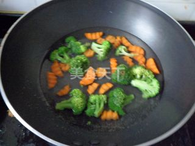
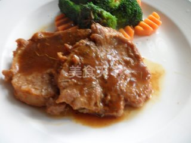

Culinary Art |
Culinary Art |
First Step: Prepare the ingredients you need. |
Second Step: Wash the beef and cut it into 1-centimeter-thick slices. The beef is patched with the back of the knife, and the slices of beef are spread evenly over the paste of the papaya puree, which is preserved for an hour. |
Third Step: Marinated beef, water wash papaya juice, black pepper seasoning and oyster sauce in a bowl, mix well with 1 TBSP water, mixed juice into the steak, and rosemary, for 1 hour. |
|  |  | |
Forth Step: Broccoli bye small flower, carrots cut into parts, ground up rinse and soak in salt water, over a period of time, water in oil, salt, bring to a boil in a blanch the broccoli and carrots, good blanch the broccoli and carrot, cool. | Fifth Step: Pan coating a layer of oil, heat, fry steak over low heat, fry until after color change, change the fire, pour into the bacon juice, add soy sauce, the fire to cook until sauce thickened. | Sixth Step: Serve broccoli and carrots, sprinkle with black pepper, and serve in a dish with the remaining juice. |